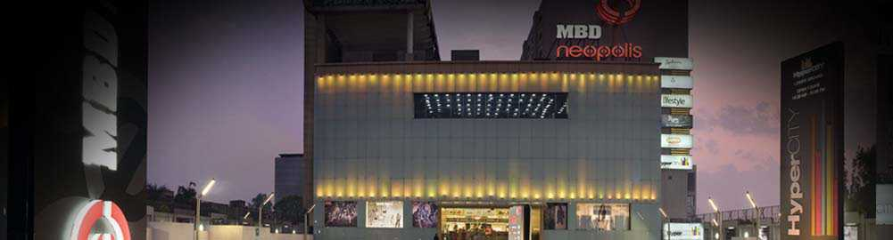

MBD
MBD Mall is the most popular mall in Ludhiana. It houses a wide range of national and international brands, like Tommy Hilfiger, The Plus Size Store, Forest Essential, FCUK, Max, Forever 21, Global Desi and many more. It is a spacious area with an entertainment zone for kids, called Fun City, which includes games and rides. It is home to Cinepolis Cinemas as well. This mall has a Radisson Blu Hotel on its premises.
SILVER ARC
Being one of the largest malls in Ludhiana, Silver Arc Mall is an all in one zone. It houses multiple brands for clothing, footwear, bags, accessories, and other categories of products. Some of the top-notch brands, like Rosso Brunello, Aldo, Kazo, Mango, Vero Moda are found here. It also has the famous, often visited PVR Cinemas, and a gaming zone for children and adults both.